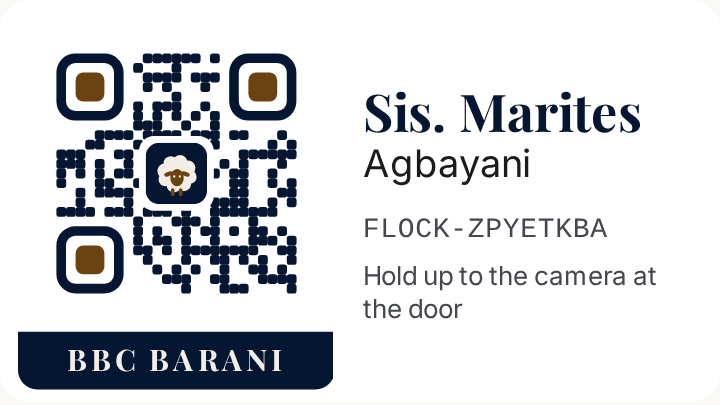

JOHN 10
Verily, verily, I say unto you, He that entereth not by the door into the sheepfold, but climbeth up some other way, the same is a thief and a robber. But he that entereth in by the door is the shepherd of the sheep. To him the porter openeth; and the sheep hear his voice: and he calleth his own sheep by name, and leadeth them out. And when he putteth forth his own sheep, he goeth before them, and the sheep follow him: for they know his voice. And a stranger will they not follow, but will flee from him: for they know not the voice of strangers. This parable spake Jesus unto them: but they understood not what things they were which he spake unto them. Then said Jesus unto them again, Verily, verily, I say unto you, I am the door of the sheep.
JOHN 10
All that ever came before me are thieves and robbers: but the sheep did not hear them. I am the door: by me if any man enter in, he shall be saved, and shall go in and out, and find pasture. The thief cometh not, but for to steal, and to kill, and to destroy: I am come that they might have life, and that they might have it more abundantly. I am the good shepherd: the good shepherd giveth his life for the sheep. But he that is an hireling, and not the shepherd, whose own the sheep are not, seeth the wolf coming, and leaveth the sheep, and fleeth. I am the good shepherd, and know my sheep, and am known of mine.
